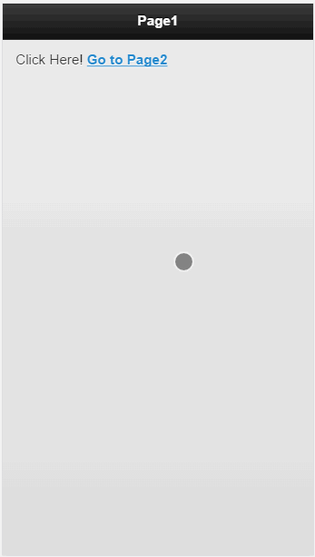
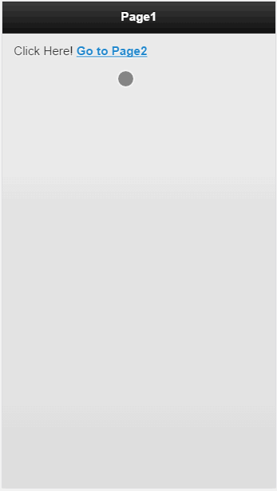

基于jQuery和jQuery UI基础之上推出了jQuery Mobile框架，其主旨就是在进行移动项目开发的过程中为开发者提供统一的接口和特征，依靠强大的jQuery类库，节省javascript代码的开发时间，提高项目开发效率
初识jQuery Mobile
简介
功能特点：
- 强大的Ajax驱动导航
保持了动画转换页面的干净优雅 - 以jQuery和jQuery UI为框架核心
- 强大的浏览器兼容性
- 框架轻量型
- 支持触摸与其他鼠标事件
- 强大的主题化框架
基础知识
视口(viewport)
分为可见视口(也即设备大小)和视窗视口(容纳的网页大小)。
默认情况下,视窗视口大小为:
iPhone：980
iPad：1024
Android：980
WinPhone：1024
以iPhone4为例，设备屏幕宽度为320px，但是它在一个屏幕上显示的网页宽度为980px，即进行了一定比例的缩放。这当然不是我们想要的结果，因为这会使得页面元素难以分辨，所以我们设置：
架构
data-role
jQuery Mobile中，在每个div上定义该属性来确定该div的角色。一个页面仅仅是一个带有指定role属性的div，而多个页面包含于一个HTML文档之中。- 主题
通过修改data-theme属性值改变元素的色卡(a-z，可在themeroller定制) 页面
123456<!-- 基本页面组成 --><div data-role="page"><div data-role="header"></div><div data-role="content"></div><div data-role="footer"></div></div>大多数设备上jQuery Mobile都可以自动调整UI适应设备方向;同时，jQuery会尝试操作初始滚动位置以隐藏地址栏来模拟原生应用(内容足够高的时候有效)
导航
后退按钮1234567891011<div id="home" data-role="page" data-add-back-btn="true"><div data-role="header"><h1>Page1</h1></div><div data-role="content">Click Here! <a href="#page2">Go to Page2</a></div></div><div id="page2" data-role="page" data-add-back-btn="true" data-back-btn-text="Previous" data-back-btn-theme="c"><div data-role="header"><h1>Page 2</h1></div><div data-role="content">Back-button visible</div></div><!-- 注意，data-add-back-btn属性在JM1.4版本上是添加在header上而非page上 -->效果如下:

内部页面链接
如上述后退按钮实例效果所示,在<a href="#id">中设置id属性即可链接到当前文档的其他页面，此处id为目标页面的id(data-role="page")
在内部页面之间导航时，每个向前访问的链接将在访问历史栈中添加一条记录，而每个后退行为则从中移除最后一条记录.
外部页面链接
访问非当前文档的页面:1<a href="otherDocument.html">Go to Next Page</a>与内部页面不同的时，JM会使用Ajax请求该文档，解析其内容，并将对应的页面添加到当前DOM中，再平滑过渡到新页面。同时请求进行时，会看到一个加载图标；而请求失败时，会出现错误警告。
注意点:
目标必须是一个JM文档;
目标必须与当前页面在同一个域名之下;
目标必须是一个只包含一个页面的文档(其实多页面也可，不过此时会忽略其他页面，只加载首页);所有目标文档中的head元素及其他在首个页面之外的内容均会被忽略
若目标是一个文件夹，则href属性必须以斜杠结尾;
不能定义a的target属性;为了减少Ajax请求时间，可以进行预缓存:
1<a href="newpage.html" data-prefetch>new page</a>另外，JM会自动删除DOM中一些过期的外部加载页面(前进或后退到一个新页面后)，若想强制不删除，可以指定
data-dom-cache="true"
绝对外部链接
访问另外的非JM内容的站点或文档:1234<a href="www.google.com" data-rel="external">访问谷歌</a><a href="www.google.com" target="_blank">访问谷歌</a><a href="www.google.com">访问谷歌</a>//与当前域名不同<a href="www.google.com" data-ajax="false">访问谷歌</a>//同一个域名下的页面用户点击绝对链接后，JM实例将被卸载，本页面将转向指定页面，除非设置了
target="_blank"
移动互联网特有链接
通过URL机制，可以拨打电话或发送短信1234567891011121314<div data-role="page" id="main"><div data-role="header"><h1>测试移动设备专有链接行为</h1></div><div data-role="content"><p>点击下列按钮进行测试</p><a href="tel:+100000000" data-role="button">呼叫总部</a><a href="sms:+100000000" data-role="button">给总部发消息</a><a href="sms:+100000000?body=Hello!" data-role="button">带正文的短消息</a><a href="tmailto:info@xxx.com?subject=Hello" data-role="button">发送邮件</a><a href="skype:skype_user?call" data-role="button">skype通信</a><a href="facetime:+100000000" data-role="button">facetime视频</a></div></div>页面间过渡效果
过渡效果采用CSS3，大部分设备上已被硬件加速。在不兼容的设备上，没有过渡动画12<a href="#page2" data-transition="slide">Go to Page2</a>//过渡效果是在a链接上添加，而非页面！！过渡效果应当尽量统一效果。
反转过渡效果12<a href="#page2" data-transition="pop" data-direction="reverse">Go to page2</a>//此时JM实例page2的后退行为将应用pop的反转效果对话框
对话框区别于普通页面:
若指定了data-add-back-btn，则在对话框左上角有关闭按钮(x)；
对话框显示的内容有边距，不是全屏，而是在原页面上弹出；
不会在访问历史中留下记录
如何设置对话框1234<!-- 方法1. 在a链接上设置data-rel="dialog" --><a href="#dialog" data-rel="dialog"></a><!-- 方法2. 在对话框页面设置data-role="dialog" --><div data-role="dialog" data-add-back-btn="true" id="dialog"></div>效果如下:

UI组件
工具栏
定位
- 内联模式
该模式为默认模式。
页头页脚在页面上以内联流的方式呈现，即页面内容超出可见高度时页脚将被隐藏，而页头只在滚动条在顶部时才可见 - 标准固定模式
滚动内容时，工具栏会自动淡出隐藏；滚动完成时，会再次出现.
点击某个非交互区域时，固定工具栏会转换为内联模式
如何设置?data-position="fixed" - 全屏固定模式
只有用户点击屏幕时才会出现，再次点击时隐藏
如何设置?
工具栏上data-position="fixed"
当前data-role="page"元素上设置data-fullscreen="true"在页头中添加内容
在页头中只添加一个a链接按钮时，该按钮将位于页头左侧；添加两个时，将分列两侧;